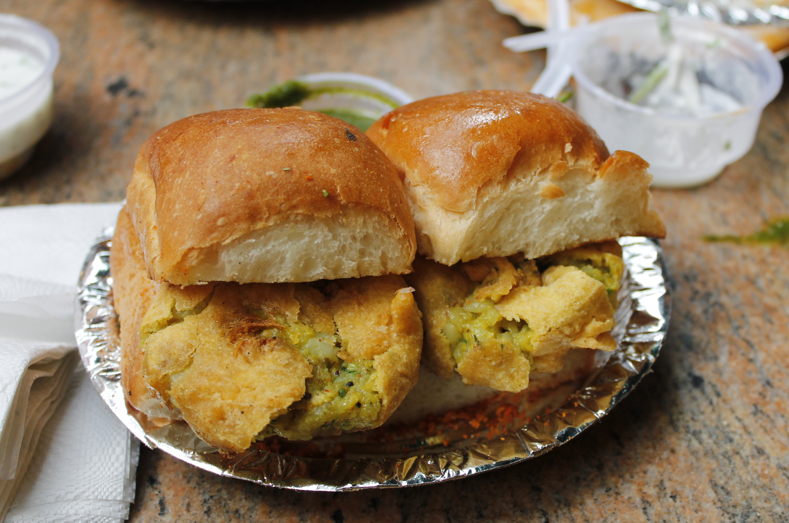

Vada Pav
Back to Home

Kabirsabri, CC BY-SA 4.0, via Wikimedia Commons / Cropped from original
Description
Vada pav, alternatively spelt wada pao, is a vegetarian fast food dish native to the Indian state of Maharashtra. The dish consists of a deep-fried potato dumpling placed inside a bread bun (pav) sliced almost in half through the middle. It is generally accompanied by one or more chutneys and a green chili pepper. Although it originated as an affordable street food in Mumbai, it is now served in food stalls and restaurants across India. It is also called Bombay burger in keeping with its origins and its resemblance in physical form to a burger.
The most famous snack in Mumbai, vada pav is claimed to be a part of the culture of Mumbaikars.
Ingredients
- 2 tsp oil
- ½ tsp mustard
- pinch of hing / asafoetida
- few curry leaves
- 1 inch ginger, crushed
- 2 clove garlic, crushed
- 1 chilli, finely chopped
- 2 tbsp coriander, finely chopped
- tsp turmeric / haldi
- 2 potato / aloo, boiled & mashed
- ½ tsp salt
- 1 tbsp lemon juice
- ¾ cup besan / gram flour
- 1 tbsp rice flour
- ¼ tsp turmeric / haldi
- ¼ tsp kashmiri red chilli powder / lal mirch powder
- pinch of hing / asafoetida
- ¼ tsp salt
- ¼ tsp baking soda
- ½ cup water
- oil for deep frying
- 6 ladi pav / dinner rolls
- 7 green chilli
- 6 tsp green chutney
- 3 tsp tamarind chutney
- 3 tsp dry garlic chutney
Steps
- Firstly, take ball sized aloo mixture and dip in besan batter and coat well.
- Deep fry in hot oil stirring occasionally.
- Now slit the ladi pav and spread 1 tsp green chutney, ½ tsp tamarind chutney and ½ tsp dry garlic chutney.
- Place the prepared vada in center of pav, chura and fried chilli.
- Finally, press the vada pav and serve immediately.
Back to Home